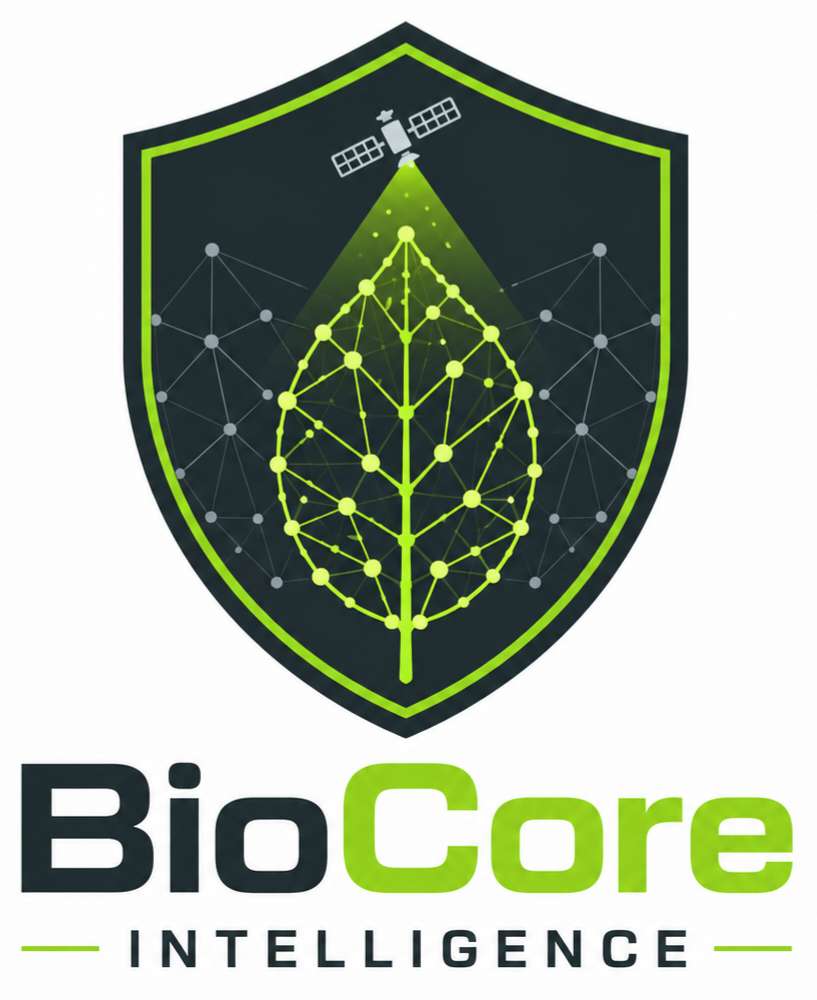

Nuestras Soluciones Desplegadas
Herramientas interactivas en la nube que demuestran nuestra capacidad de procesamiento, auditoría y análisis avanzado.

BioCore Intelligence App
Plataforma centralizada para la automatización de datos ecológicos. Permite el procesamiento avanzado de variables y visualización dinámica de indicadores clave para líneas de base e informes de cumplimiento.
DarwinCheck App
Aplicación web especializada diseñada para auditar, limpiar y corregir bases de datos biológicas complejas. Optimiza los tiempos de control de calidad previos a la entrega de informes técnicos.